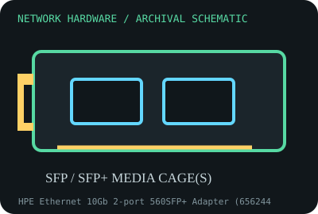

[ MODEL-SPECIFIC NETWORK HARDWARE RECORD ]
HPE Ethernet 10Gb 2-port 560SFP+ Adapter (656244-B21)
HPE-branded dual SFP+ 10 Gigabit Ethernet PCIe server adapter. This record identifies the stated model/revision; visually similar products may use different silicon or firmware.

IDENTIFICATION: Verify the full label, board revision, vendor/device IDs and regulatory markings before selecting firmware or drivers. Nominal PHY/link rates below are not measured application throughput.
Specifications and compatibility
| Subcategory | 10 Gigabit and server adapters |
|---|---|
| Exact model | HPE Ethernet 10Gb 2-port 560SFP+ Adapter (656244-B21) |
| Interface and connector | PCIe 2.0 x8 host edge; two SFP+ cages, supporting compatible 10GbE optics or direct-attach copper cables. |
| Controller / PHY / radio | Broadcom 57810S-family controller in this adapter family; optical/electrical PHY is determined by inserted transceiver or DAC. |
| Nominal throughput (not a test) | Two ports, each up to 10 Gb/s nominal; 20 Gb/s aggregate line capacity is not a single measured stream and depends on compatible optics, link partners and PCIe capacity. |
| Measured throughput | No benchmark measurement is represented. Track per-port and aggregate tests separately; document optic/DAC SKU, fiber, switch and OS. |
| Driver / OS / firmware | Use HPE-supported adapter firmware and operating-system driver bundle for the target ProLiant generation; Linux commonly uses bnx2x with appropriate firmware. HPE SUM/Service Pack support varies by server and OS. |
| Compatibility | Requires PCIe x8 electrical connectivity, SFP+ optics/DAC supported by HPE, matching fiber wavelength/type or cable, and adequate airflow. OEM transceiver qualification may restrict link behavior. |
| Variant warning | 656244-B21 is the option number; distinguish 560SFP+ from 560FLR-SFP+ and other HPE/Broadcom 10GbE adapters. Firmware, bracket, secure firmware package and supported host list differ by SKU. |
Variant and operating notes
656244-B21 is the option number; distinguish 560SFP+ from 560FLR-SFP+ and other HPE/Broadcom 10GbE adapters. Firmware, bracket, secure firmware package and supported host list differ by SKU.
Use HPE-supported adapter firmware and operating-system driver bundle for the target ProLiant generation; Linux commonly uses bnx2x with appropriate firmware. HPE SUM/Service Pack support varies by server and OS.
Throughput policy: vendor/standard rates are labeled nominal. This archive includes no measured benchmark for this specimen; do not interpret a link rate or aggregate port capacity as sustained payload performance.
Archival, ESD and preservation notes
Retain the option label, spare/assembly number, MACs, firmware and transceiver labels. SFP+ modules are ESD-sensitive; cap cages and optics, keep fiber end faces clean, and store unpowered in ESD shielding.
Preserve the exact model/revision, serial/date code, firmware and driver versions, accessories, condition, source provenance, and source-document revision. Never retain access credentials or undocumented secrets in the public catalog.
Manufacturer and standards sources
- HPE 560SFP+ adapter product/support informationManufacturer or standards reference; match the complete model/revision before applying specifications.
- HPE Ethernet 10Gb adapter documentation libraryManufacturer or standards reference; match the complete model/revision before applying specifications.
- IEEE 802.3 Ethernet standardsManufacturer or standards reference; match the complete model/revision before applying specifications.
Source coverage can be family-level; manufacturer documentation for the exact part number and hardware revision takes precedence. Standards describe protocol behavior, not a promise of real-world performance.